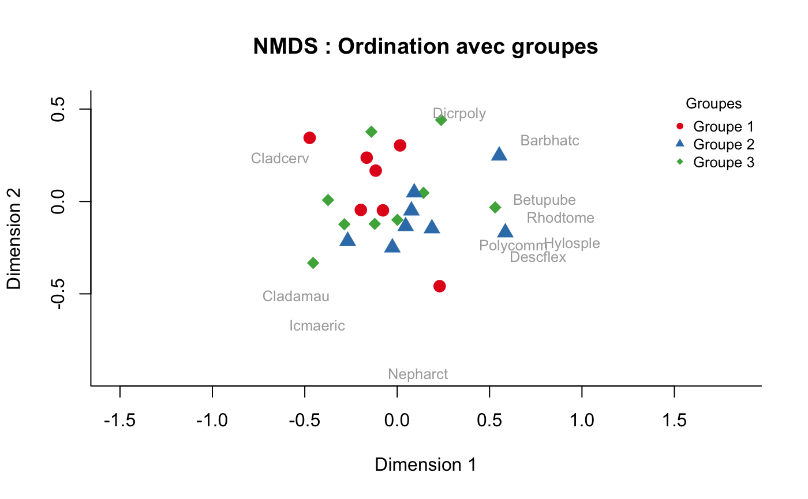
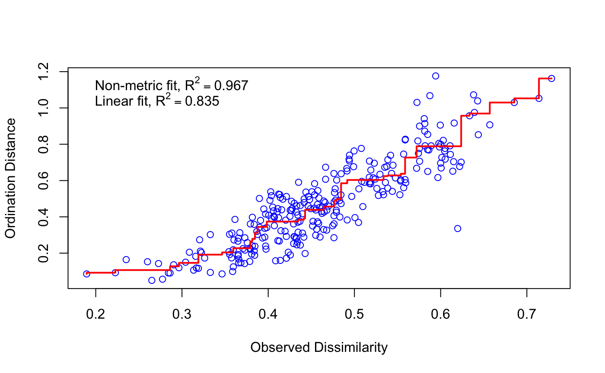

Le package vegan pour R est un outil essentiel en écologie communautaire, offrant une gamme complète de fonctions pour l’analyse de la diversité, l’ordination et l’étude des dissimilarités. Il est largement utilisé pour des analyses écologiques descriptives et multivariées.
L’analyse multidimensionnelle non métrique (NMDS) est une méthode d’ordination utilisée pour représenter des relations complexes dans des données multidimensionnelles sous la forme de points dans un espace à faible dimension (souvent 2D ou 3D). Contrairement aux méthodes métriques, la NMDS repose sur les rangs des distances entre les points plutôt que sur leurs valeurs absolues, ce qui la rend adaptée aux données écologiques présentant des structures non linéaires.
La section suivante présente un extrait de code R pour réaliser une analyse NMDS. Le code inclut la création de graphiques annotés et l’attribution de couleurs et symboles aux groupes pour une meilleure visualisation des résultats
# Charger les packages nécessaires
library(vegan)
# Charger l'exemple de données (abondance des espèces)
data(varespec) # Jeu de données d'abondance d'espèces
# Calcul de la matrice de dissimilarité (méthode de Bray-Curtis adaptée à l'écologie)
dissimilarity_matrix <- vegdist(varespec, method = "bray")
# Réalisation de l'ordination NMDS en utilisant directement les données brutes
nmds_result <- metaMDS(varespec, k = 2, trymax = 100) # k = 2 pour une projection 2D
# Création de groupes fictifs pour démonstration
set.seed(123) # Fixer une graine pour la reproductibilité
groupes <- sample(c("Groupe 1", "Groupe 2", "Groupe 3"), nrow(varespec), replace = TRUE)
# Attribution de couleurs et de symboles aux groupes
couleurs <- c("#E41A1C", "#377EB8", "#4DAF4A") # Couleurs esthétiques (palette ColorBrewer)
symboles <- c(16, 17, 18) # Différents symboles (cercle, triangle, losange)
couleurs_groupes <- couleurs[as.factor(groupes)] # Assigner les couleurs selon les groupes
symboles_groupes <- symboles[as.factor(groupes)] # Assigner les symboles selon les groupes
# Préparer le graphique NMDS avec des ajustements esthétiques
plot(nmds_result, type = "n", main = "NMDS : Ordination avec groupes", xlab = "Dimension 1", ylab = "Dimension 2", bty = "l") # "bty = 'l'" pour un cadre plus léger
points(nmds_result, display = "sites", col = couleurs_groupes, pch = symboles_groupes, cex = 1.5) # Points des sites
# Ajouter des labels uniquement pour les espèces les plus pertinentes
species_scores <- scores(nmds_result, display = "species")
if (!is.null(species_scores)) {
# Sélection des espèces avec une distance importante de l'origine
species_to_label <- species_scores[rowSums(abs(species_scores)) > quantile(rowSums(abs(species_scores)), 0.75), ]
text(species_to_label, labels = rownames(species_to_label), col = "darkgray", cex = 0.8)
} else {
message("Les scores des espèces ne sont pas disponibles.")
}
# Ajouter une légende
legend("topright", legend = levels(as.factor(groupes)), col = couleurs, pch = symboles, title = "Groupes", bty = "n", cex = 0.8) # "bty = 'n'" pour une légende sans cadre
# Qualité de l’ajustement (stress)
nmds_result$stress # ceci donne la valeur du stress
stressplot(resultat_nmds) # Permet de visualiser la qualité de l’ajustement (stress)
Voici le graphique de l'analyse NMDS, illustrant les relations entre les sites et les groupes :
Pour visualiser la qualité de l’ajustement (stress), on utilise un diagramme de Shepard ou un graphique de stress :
L’évaluation du stress dans une analyse NMDS permet d’estimer la qualité de l’ajustement du modèle aux données. Une valeur de stress inférieure à 0,05 indique un excellent ajustement, une valeur entre 0,05 et 0,1 représente un bon ajustement, tandis qu’une valeur située entre 0,1 et 0,2 correspond à un ajustement acceptable.
Réduction de la dimensionnalité.
data(dune)
mod <- rda(dune ~ 1)
plot(mod)
Étudie les relations entre variables environnementales et espèces.
data(dune)
data(dune.env)
mod <- rda(dune ~ Management + Moisture, dune.env)
plot(mod)
Analyse des relations canoniques.
mod <- cca(dune ~ Management + Moisture, dune.env)
plot(mod)
Évalue la dispersion au sein et entre groupes.
dist <- vegdist(dune)
groups <- dune.env$Management
beta <- betadisper(dist, groups)
anova(beta)
plot(beta)
Test statistique pour comparer les groupes.
dune.dist <- vegdist(dune)
anosim_result <- anosim(dune.dist, dune.env$Management)
summary(anosim_result)
plot(anosim_result)
Teste les différences multivariées entre groupes.
adonis2(dune ~ Management + Moisture, data = dune.env, method = "bray")
Compare alpha, bêta et gamma diversités.
data(mite)
adipart(mite, index = "shannon", nsimul = 99)
Partition de la diversité sur des niveaux hiérarchiques.
data(mite)
hiersimu(mite, FUN = diversity, relative = TRUE, nsimul = 99)
Corrélation entre matrices de distances.
data(dune)
mantel(vegdist(dune), vegdist(dune.env$Moisture))
Ajustement de surfaces sur des ordinations.
with(dune.env, ordiellipse(mod, Management, label = TRUE))
ordisurf(mod, diversity(dune), add = TRUE)
Test non paramétrique pour comparer des groupes.
mrpp_result <- mrpp(dune, dune.env$Management)
summary(mrpp_result)
Analyse hiérarchique des regroupements.
hc <- hclust(vegdist(dune))
plot(hc)
Évalue la richesse en espèces.
specaccum(dune)
Calcul d’indices de diversité comme Shannon et Simpson.
div <- diversity(dune, index = "shannon")
Comparaison des diversités à des niveaux d’échantillonnage constants.
rarefy(dune, sample = 20)
Pour tester la signification des modèles.
anova(mod, by = "term")
Identifie les espèces contribuant le plus aux différences entre groupes.
simper(dune, dune.env$Management)
avgdist(dune, sample = 20, iterations = 100)
• Tracés avancés : ordiplot, ordihull, ordispider.
• Modifications des matrices de données : decostand, vegdist.
• Calculs taxonomiques : taxondive.
Pour plus de détails, consultez la documentation officielle du package Vegan sur CRAN :